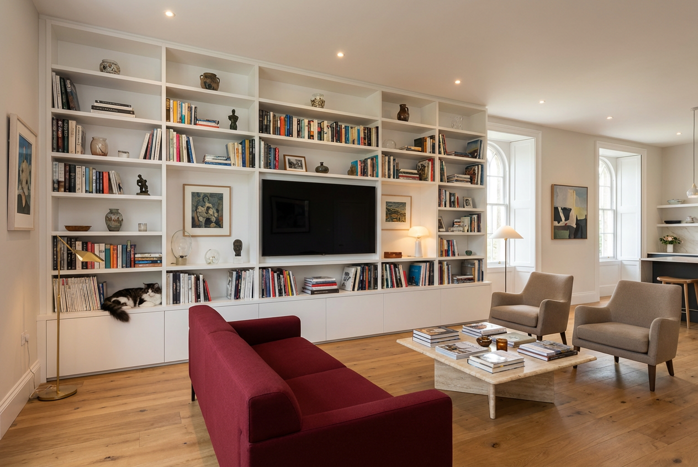

Projektuję meble na wymiar dla klientów z Kalwarii Zebrzydowskiej, Krakowa i Małopolski, ze szczególnym naciskiem na jakość detalu, proporcje i wykonanie.
Moja praca obejmuje koncepcję mebla, układ funkcjonalny, dobór materiałów, wizualizacje oraz dokumentację techniczną dla stolarza lub wykonawcy.
Szczególnie dobrze czuję się w projektach mebli wykonywanych tradycyjnie, gdzie ważna jest konstrukcja, detale stolarskie i logiczna metoda produkcji.
← Powrót do strony głównej